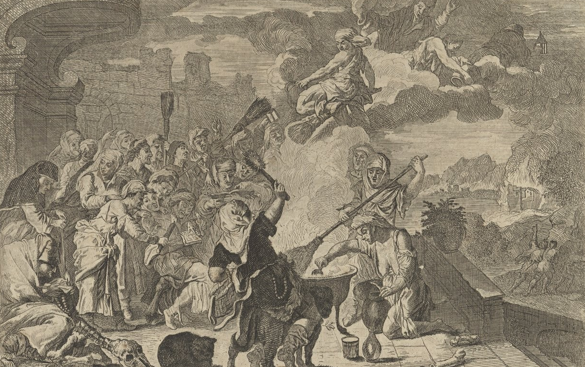
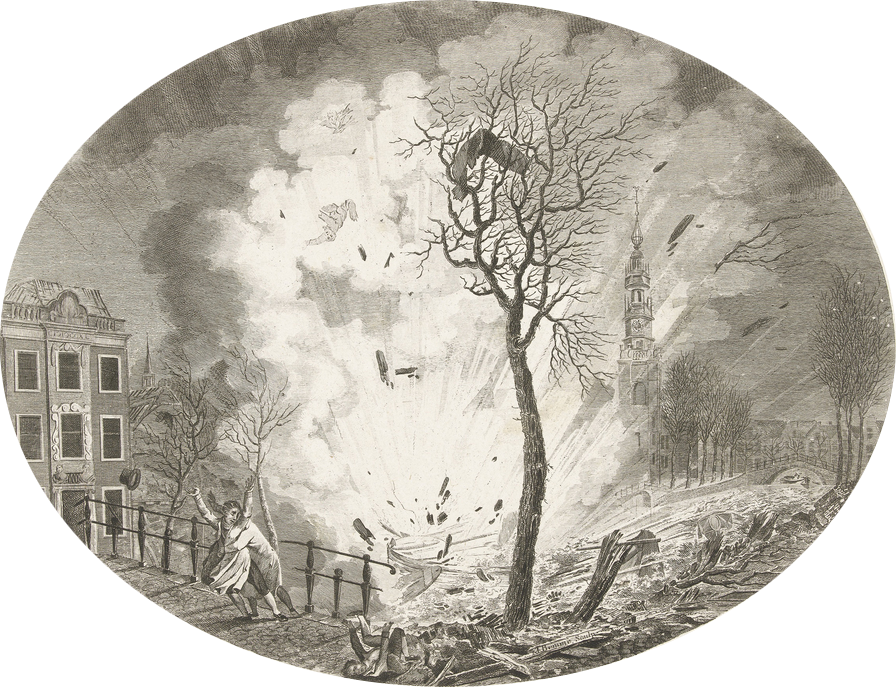

Puisque notre combat écologiste est une lutte pour habiter pleinement et dignement des milieux vivants, un monde où la moitié de la population domine l'autre ne nous semble pas désirable. En ce sens, l’écologie sans transition, c'est aussi l'abolition, sans transition, du patriarcat.
Nombre de penseuses et militantes ont, avant nous, fait le lien entre écologie et féminisme. Bien qu'il soit récent, le terme d'écoféminisme recouvre historiquement des pensées, des luttes, des créations qui ont pour finalité l'émancipation des femmes, des personnes transgenres et non-binaires, en les considérant comme des habitantes à part entière des milieux vivants dans lesquels elles évoluent. Si le terme hybride d'écoféminisme, permet de penser une lutte conjointe entre féminisme et écologie, il va au-delà d'une simple superposition de ces deux luttes, et trace une voie visant à alimenter de concert des révoltes contre les ravages du capitalisme et du patriarcat et à soigner les corps et les esprits de celleux qui les subissent, y résistent et s'y opposent.
C'est avec l'exigence du souvenir de Françoise d'Eaubonne, militante écoféministe révolutionnaire, adepte de l'action directe, qui participa à l'attaque à l'explosif contre la centrale de Fessenheim en 1975, des activistes des Suds comme les villageoises Chipkos ou les militantes Kendeng et des artistes puissantes comme la poétesse militante Oodgeroo Noonuccal, que nous voulons critiquer et écarter certains discours se targuant d'être écoféministes. Nous voulons donner de la voix aux écoféministes qui inspirent nos réflexions, nos actions, nos créations, bref, nos luttes et ainsi diffuser un écoféminisme explosif !

La nébuleuse écoféministe : éclat et obscurité
Rester sur le qui-vive
Plusieurs questions permettent de savoir quand tirer à boulets rouges lorsqu'on prétend parler d'écoféminisme.
Primo, réduit-on l'action écoféministe à une consommation onéreuse ? À travers le marketing et la publicité, l'industrie sait s'approprier les luttes pour créer des marchandises à destination des militant·es. Par exemple, sous couvert de diffuser un message féministe, on a pu voir des slogans, initialement émancipateurs, se retrouver sur des produits de concommation. Cette réappropriation marchande du féminisme et, de plus en plus, de l'écoféminisme enferme nos luttes dans le champ limitant de l'action individuelle par la consommation. La lutte émancipatrice devient alors illusion d'un mode de vie éthique et ecofriendly, dont le coût est, lui, bien réel.
Secundo, le caractère collectif de l'émancipation est-il oublié ? L'écoféminisme perd tout son sens s'il n'émancipe que certaines femmes et nie les disparités, notamment de classe et de race, entre elles. Il ne s'agit pas de reproduire des schémas de domination en oubliant que certaines ne peuvent accéder aux postes à responsabilités uniquement parce qu'elles délèguent les tâches ménagères à d'autres femmes issues de minorités, en les employant comme nourrices ou comme femmes de ménage.
Tertio, ces pratiques qui se disent écoféministes ont-elles tendance à fatiguer les corps et à encombrer les esprits de celles qui en font usage ? De nombreuses startups investissent le marché et prétendent favoriser un changement global par la somme des initiatives individuelles, du zéro plastique au zéro carbone. Non seulement ces initiatives n’ont zéro utilité pour la planète, mais elles sont également loin du zéro prise de tête. En ciblant spécifiquement les femmes, sommées de fabriquer leur lessive zéro déchet, ces injonctions confortent l'inégale répartition des tâches du foyer à travers l'éco-charge mentale. Quoi de plus logique pour émanciper les femmes des tâches ménagères que de leur assigner la culpabilité des dégradations environnementales et le fardeau écologique du do it yourself ménager ? L'écoféminisme n'a pas vocation à contraindre les femmes à être les soigneuses de la planète.
Si la réponse à ces trois interrogations tend vers l'affirmatif, n'hésitez pas, sortez les canons...
Rejeter la « femme par nature »D'autres interprétations de l'écoféminisme proposent de mettre en évidence un lien originel entre la Femme et la Nature. Les femmes, renvoyées à leur fonction de matrice, sont clairement naturalisées : l'analogie avec les cycles saisonniers et la fertilité de la terre est sous-jacente. Cette posture fait des cycles menstruels, de la grossesse, de la maternité l'alpha et l’oméga de la lutte écoféministe. L'abandon de la pilule et du stérilet hormonal est alors considéré comme un geste fondamental puisqu'il permettrait de se reconnecter aux cycles menstruels naturels et de retrouver la puissance spécifique du féminin. Un tel choix n'a ici aucune dimension politique. Il réitère au contraire le discours patriarcal dominant, articulé précisément autour de l'idée selon laquelle ces questions relèveraient uniquement de l'intime. Pourtant abandonner les dispositifs contraceptifs hormonaux, c'est aussi affirmer son refus de voir nos corps contrôlés par l'industrie pharmaceutique et donc donner à cette décision une ampleur politique.
Ce type de discours peut s'appuyer sur un conservatisme où la maternité est traditionnellement conçue comme l'aboutissement de la féminité. On risque alors de produire un discours essentialiste, c'est-à-dire qui nie le genre en tant que construction sociale. Ces postures nient le vécu et le ressenti des personnes transidentitaires, c'est-à-dire qui vivent une inadéquation entre leur identité de genre et celle qui leur fut assigné à la naissance (dysphorie).
Les étoiles n'ont pas de prixCette logique essentialiste s’accommode également de croyances et pratiques spirituelles rendues accessibles au cours de stages et formations. S'appuyant sur certaines cosmologies et prônant un retour à un soi-disant lien premier entre La Femme et La Nature, il s'agirait de retrouver par des rites issus de traditions non-occidentales, une unité sacrée originelle, un grand principe féminin.
Les pseudo-écoles spirituelles s'adressant aux femmes en quête de leur « part sauvage » pullulent, proposant des séances de chamanisme par Skype (dont le prix s'élève parfois à plus de 100 euros de l'heure) ou encore des cercles de femmes où l'on apprend à passer différentes portes invisibles du monde (pour la modique somme de 320 euros). Ces nouvelles gourelles qui allient des croyances New Age et des techniques de développement personnel, commercialisent la spiritualité et s'approprient tout un pan de l'écoféminisme qui prône une approche plus sensible du monde.
Nous ne rejetons pas en bloc l'intérêt d'une approche spirituelle, bien au contraire, le potentiel spirituel de l'écofeminisme est désirable en bien des aspects. Non seulement car la spiritualité peut créer d'autres rapports aux milieux vivants, mais aussi car certaines coutumes et rites ont un pouvoir émancipateur pour celleux qui les exercent. Cependant, d'une part, les discours essentialistes de certaines approches spirituelles instaurent une féminité dite naturelle, terriblement normée et oppressive, dans laquelle nombre d'entre nous ne se reconnaissent pas. D'autre part, certaines approches spirituelles sont de l'ordre de la récupération culturelle. Elles constituent une appropriation mystifiée et uniformisée de coutumes religieuses et culturelles issues des pays colonisés. Un groupe d'universitaires amérindien·nes a ainsi publié en 2015 une déclaration contre certains groupes New Age dont les actes d' « exploitation culturelle [...] nous déshumanisent en tant que nation indigène car ils impliquent que notre culture et humanité, comme notre Terre, est à la portée de tout le monde »1.
Ne pas faire feu de tout bois
Face aux critiques précédemment établies, devons-nous renoncer à l'écoféminisme ? Nous avons la volonté d’affirmer au contraire qu’une analyse plus nuancée permettra de faire ressortir dans les pratiques et les théories écoféministes de quoi alimenter nos luttes. Mais pour tracer ces pistes réjouissantes, clarifions quelques concepts clés.
Quelques éclaircissements : capitalisme et patriarcat, une articulation obscure ?
Les féministes matérialistes ont montré que nos sociétés occidentales et les espaces qu’elles ont colonisés font coexister « mode de production capitaliste » et « mode de production domestique »2. L’un repose sur l’appropriation des moyens de production par des propriétaires, l’autre sur l’appropriation des femmes par les hommes.
Dans les sociétés modernes, les femmes sont donc traditionnellement en charge du travail domestique. Or les produits de ce travail n'ont pas de valeur marchande : un gâteau « fait maison » n’est pas comptabilisé dans le PIB, contrairement à celui acheté en boulangerie. Les hommes, quant à eux, vendent leur force de travail contre rémunération. Pourtant, l’ensemble des travaux effectués par les femmes dans le foyer est essentiel à la reproduction de la force de travail : engendrer et élever les futurs travailleurs, nourrir les travailleurs actuels avec ces gâteaux faits maison, leur permettre de se reposer dans un endroit propre, etc. Ce travail domestique est donc indispensable au cycle d’accumulation de valeur, mais de manière indirecte, si bien qu'il n’est pas reconnu comme tel3.
Les femmes étaient déjà assignées aux places inférieures dans le patriarcat pré-capitaliste, notamment dans la sphère privée. Cependant elles étaient aussi nombreuses à effectuer des travaux socialement valorisés (brasseuse, sage-femme, drapière, forgeronne...)4. En régime capitaliste, elles deviennent des machines à reproduire des travailleurs, doublement exploitées par l'invisibilisation de leur participation à la sphère marchande et par la dévalorisation de leur travail, ce qui amène nombre de féministes à parler d’un « capitalisme patriarcal »5.
De nos jours, les femmes des classes moyenne et supérieure accèdent aussi aux métiers socialement valorisés. Cependant, cette « émancipation financière » n’est jamais sans conséquence : charge mentale des tâches domestiques qui s'ajoutent à celles de la journée de travail, exploitation des femmes précaires pour les réaliser, ou encore sacrifice de la vie privée pour montrer une entière dévotion au travail. Entrer dans le monde économique masculin c’est donc se soumettre à ses valeurs et préserver son fonctionnement compétitif et aliénant, subir la double aliénation (privée et publique) et renforcer l’exploitation d’autres travailleuses.
Lumière sur l’analogie « femme/nature » : deux exploitations à combattre
L'analogie récurrente qui consiste à associer les femmes à la Terre ou à la nature en tant qu'entités exploitées par les hommes et l'industrie confond deux types d'exploitation. Il y a une exploitation violente et destructrice des milieux vivants, justifiée par des arguments rationalistes et virilistes parfois similaires aux discours légitimant les violences sexistes. Cependant, cette exploitation ne peut être mise sur le même plan que le fait social de la domination des femmes. Il n'y a pas, comme on l'entend parfois dans certains discours écologistes, de « viol de la nature », car il n'existe pas d'individu humain « nature » capable de reconnaître la domination sociale qui s'exerce à travers cet acte de violence, ni de volonté de briser psychiquement la « Terre » en attaquant son intégrité physique. Formuler cette analogie revient à naturaliser les femmes, mais aussi à nier la violence qu'elles subissent et la puissance des survivantes.
Plutôt que de confondre la domination des femmes et l'exploitation des milieux vivants, les écoféministes des années 1970 ont cherché à montrer leur articulation, à penser leurs connexions dans la mesure où l’une s’appuie sur l’autre, la renforce, la légitime, et inversement. Dans les sociétés occidentales, la « nature » est disqualifiée à partir d’arguments qui la considèrent comme une entité féminine, et les femmes sont sans cesse renvoyées à leur « naturalité »6.
Ce sont les mêmes valeurs, associées au genre masculin - socialement construit -, qui légitiment la domination systémique des femmes et la destruction de l'environnement. Les hommes, rationnels, entreprenants, courageux, seraient bien plus aptes à évoluer dans la sphère publique (économie, politique). Or, rationaliser la « nature » pour exploiter ses « ressources » et la rendre « profitable » est aussi la tâche essentielle qui est conférée aux hommes. Légitimé par la hiérarchie de valeurs patriarcale, le capitalisme ravage les milieux vivants, et asservit les femmes à l'extérieur comme à l'intérieur du foyer.
Diffraction du spectre de la lutteL’analyse des liens entre capitalisme, patriarcat, exploitation des femmes et exploitation des milieux vivants, est notamment permise par la tradition politique des premières écoféministes, issues du militantisme matérialiste, communiste ou encore anarchiste. Cette tradition politique permet très tôt de rendre primordiale la pensée intersectionnelle au sein de l'écoféminisme, c'est-à-dire le refus de cloisonner et de hiérarchiser des systèmes d'oppression qui s'imbriquent et prennent des formes particulières, quand les individus appartiennent à plusieurs catégories discriminées (genre, classe sociale, race, orientation sexuelle, handicap, etc.).
Qui sont les résistantes ? Comment se recoupent et s'augmentent les oppressions ? Comment prendre en compte ces imbrications au sein de nos luttes ? Nous ne sommes pas des groupes homogènes qui combattons des oppressions également subies : si les femmes sont bien les premières victimes de la crise écologique, une pensée écoféministe aboutie doit prendre en compte la dimension économique et raciale des inégalités écologiques.
Les femmes les plus précaires, celles qui sont déshumanisées par le racisme, sont les premières victimes du ravage. La ségrégation écologique conditionne les familles précaires à vivre à côté de lieux pollués (pôles industriels, incinérateurs, usines de traitement des eaux usées, déchetteries). Les femmes, qui passent un temps au foyer plus important que les hommes, sont donc les premières victimes (maladies thyroïdiennes, fausses couches) et observatrices (maladies infantiles, insalubrité de l'eau) de ces pollutions. Dans les pays des Suds, elles sont bien souvent assignées aux activités de préservation des ruisseaux, aux collectes des engrais naturels... Ces tâches les mènent à observer et à subir directement tout ce qui dégrade les milieux vivants : la pollution des sols, l'assèchement des cours d'eau, la mauvaise qualité de l'air7.
Ces conditions d'existence expliquent en partie pourquoi le combat contre les dégradations écologiques et les inégalités environnementales a été et est encore porté par des groupes majoritairement féminins et précaires (comme le mouvement Chipko ou la lutte de Love Canal). Le « soin » est un rôle imposé aux femmes par l'enfermement au foyer, mais quand ces dernières doivent combattre la destruction des milieux vivants pour la survie de leur famille, il prend la dimension publique d'une lutte politique. Les militantes évoquées ne se sont pas contentées de réparer, elles s'y sont opposées, malgré les risques physiques et légaux, car soigner implique aussi de détruire ce qui nuit.
Incendier les dualismesLes écoféministes qui nous inspirent constatent que ce sont les valeurs et comportements associés au masculin et au capitalisme - rationalité et négation de toute limite matérielle - qui ont mené à l'exploitation et à la dégradation des milieux. Mais s'y ajoute aussi une dichotomie moderne occidentale entre nature et culture, hégémonique depuis la colonisation. Les écoféministes, notamment en Inde, cherchent à créer une autre éthique écologique, une autre vision du monde qui dépasse ces comportements et brise les cases de la pensée occidentale. Ne plus considérer les milieux qui nous entourent comme des stocks de « ressources », c'est-à-dire des éléments économiques à exploiter, mais penser les complémentarités, les interdépendances et les limites.
Les militant·es écoqueer8 ont aussi rejeté les dualismes (nature/culture, femme/homme, etc.), en tant qu'ils proviennent de normes hétérosexuelles, ou hétéronormativité9, qui saturent notre compréhension des humains et des milieux en analysant « […] comment les discours de la nature ont été utilisés pour imposer l'hétéronormativité, pour contrôler la sexualité et pour punir et exclure les personnes qui ont été jugées sexuellement transgressives, nous pouvons commencer à comprendre les similitudes profondes et sous-jacentes entre les luttes contre l'oppression sexuelle et les autres luttes pour la justice environnementale »10. Puisque l'hétéronormativité classe et hiérarchise selon un schéma binaire qui valorise ce qui est « naturel » et marginalise ce qui est déviant car « non-naturel », il nous faut apporter à la lutte écologique sa part de queerness11, afin de reconnaître véritablement la diversité des milieux vivants.
Cette réactualisation du militantisme écologique a aussi une influence directe sur le féminisme. Là où nombre de militantes féministes cherchent à s'approprier les comportements associés au masculin pour se faire une place dans les sphères économique et politique, les écoféministes renversent la hiérarchie pour se poser la question véritable : quels sont les comportements qui permettraient à tou·tes de vivre dignement, de coexister avec les autres habitant·es des mêmes milieux ? À cela, elles répondent par certaines valeurs historiquement associées au genre féminin et dépréciées : le soin, l'écoute, l’attention aux autres et aux milieux vivants. Ces valeurs peuvent faire l'objet d'une réappropriation par tou·tes pour devenir un socle commun hors des catégories de genre. Dès lors, leur poids ne pèsera plus sur les seules épaules des femmes. Elles viennent également orienter la manière dont s'exprimera la lutte des écofeministes, qui chercheront à s'éloigner des pratiques oppressives. Leur combativité, leur ténacité, leur pugnacité, ne s'inscriront pas dans les traces oppressives des luttes viriles, mais se voudront émancipatrices. L'écoféminisme n'implique pas seulement de démanteler le genre, il décloisonne tout en remettant sous nos yeux les valeurs essentielles pour coexister ; et celles-ci ne sont évidemment pas celles du capitalisme, du patriarcat et de l'impérialisme.
Il est temps de mettre le feu aux poudres
Des corps étincelants
Les écoféministes accordent un intérêt primordial aux corps, dont elles font des outils de lutte écologiste : elles le mettent en scène, le théâtralisent. La nudité, par exemple, a pu être utilisée comme une arme par des militantes pour créer le malaise ou défier la vulnérabilité qui lui est souvent associée. Plutôt que de subir l'hypersexualisation des corps par la publicité, les films, et les imaginaires de la société patriarcale, ces militantes choisissent la manière dont leurs corps vont apparaître, créant ainsi une posture quasi-guerrière. Ce renversement rappelle la formule de l'activiste afro-féministe Audre Lorde, pour qui « on ne peut détruire la maison du maître avec les instruments du maître ». Renverser les valeurs du patriarcat, c'est se doter de nouveaux outils de lutte.
Le déploiement offensif de leur corps permet aux écoféministes d'incarner leurs luttes et de refuser la discipline rigoureuse imposée aux corps féminins par la culture corsetée du patriarcat. Les paysannes Kendeng en Indonésie ont choisi cette forme de lutte en coulant leurs pieds dans du béton en guise de protestation contre la construction d'un gigantesque complexe industriel à Java12. L'immobilité renvoie ici à une posture inébranlable et se trouve revalorisée par la volonté farouche de ces femmes de s'ancrer dans l'espace qu'elles habitent et dont elles sont indissociables.
Loin d'être une simple panoplie étrangère, le corps est au cœur des préoccupations écoféministes et l'objet de soin (care)13. Faisant écho à la vision relationnelle de l'écologie, le care flamboyant que s'approprient les écoféministes pointe du doigt l'individu comme une entité en perpétuelle relation aux autres, contrairement à la vision des expropriateurs qui nous enjoignent à « nous considérer comme des entités séparées, isolées, en compétition, aliénées, impuissantes et seules »14. Historiquement, utilisé comme un outil d'oppression, le care devient un outil de résistance et de réparation. À travers la parole des écoféministes, il s'étend aux rapports sociaux en général pour ne plus être cloisonné aux comportements dits féminins.
Tisser une toile de feuLes écoféministes accordent un intérêt à la structure et à l'organisation des collectifs, c'est-à-dire à ce qu'on appelle la micropolitique des groupes. Cet apport est précieux. Elles se penchent sur les modalités et dynamiques internes des luttes, trop souvent imprégnées de virilisme et contaminées par des guerres d'egos.
Les écoféministes ont participé à remettre en cause l'omnipotence de la macropolitique pour rendre visibles les rapports de pouvoir intersubjectifs, qui reproduisent les oppressions systémiques à une échelle plus large. Par exemple, les groupes de parole facilitent la prise en compte et le partage des émotions au sein du collectif qui gagne alors en lucidité, en clairvoyance et en efficacité. Ce travail de micropolitique est encore trop souvent à la charge des femmes.
Combien d'entre nous ont vu leur collectif militant se scléroser par l'injonction à être fort·e, solide, à garder la peur ou le malaise pour soi, malgré les appels à créer, dans l'ici et maintenant, un autre rapport au vivant et à l'autre ? « Même les états que nous ressentons comme négatifs, comme pénibles, font corps avec de l’énergie. La colère, la rage, la dépression, le cynisme, la peur qui est résistance sont toutes des sources de pouvoir si nous les utilisons comme indicateurs plutôt que comme blocs »15. En revalorisant le particulier au regard du général, en pensant l'émotion, qu'elle soit positive ou négative, comme source de puissance et non de faiblesse, on peut envisager des parcours militants sur le temps long, prenant en compte l'angoisse et le trauma.
À rebours des survivalistes qui partent s'isoler pour mieux survivre à une prétendue fin du monde imminente, les écoféministes nous poussent à faire le choix de l'action politique et à éprouver la joie de sentir la puissance de l'agir collectif. Dans un contexte de guerre froide et de menace atomique (années 1970 et 1980), certaines écoféministes ont choisi de répondre à l'angoisse d'un avenir irradié par l'action politique : blocage ou sabotage de centrales nucléaires afin de se battre pour un avenir radieux.
Maintenant, il nous faut « tisser la toile du soulèvement global »16. Le combat écoféministe questionne notre posture militante : nous voulons envisager ce qui nous réunit, ce qui s'enchevêtre, s'entrecroise, se chevauche, ce qui fait commun. Dans cette lutte plurielle, l'expression à la première personne, le « je » (vois, ressens, entends...) vient s'entrelacer avec les traditionnels « nous » et « on », afin de réhabiliter le sensible. Nos peurs individuelles et chacune des blessures infligées par les manifestations du patriarcat, du colonialisme et du capitalisme deviennent ainsi des questions collectives et laissent place aux désirs, aux révoltes, et à la contre-violence17.
Le fracas des météoresPuisque nous défendons une écologie sensible, nous ne pouvons-nous contenter de lister des chiffres et de réciter les discours des scientifiques. Nous pensons qu'il faut s'émouvoir pour se mouvoir. Parce que le monde brûle et que nous ne voulons plus être spectatrices de l'incendie généralisé, nous choisissons de nous armer d'une parole incandescente qui puisse inciter à « se battre sur un mode vivant »18.
Il nous faut de l'essence et non de l'eau claire
pour que notre lutte soit incendiaire
J'ai envie de reprendre les espaces. Les espaces de la ville où on nous apprend à nous faire petites et à passer sans faire trop de bruit. Les espaces de forêt où l'on nous impose un rapport comptable à la biodiversité. Les espaces de circulation et fracasser le bitume des routes pour y semer des graines.
J'ai envie que mon corps se déploie dans l'espace. Qu'il soit offensif. Pour que le bloc de tête des manifs soit le lieu d'expression de cette corporalité sans pour autant m'imposer un comportement viril et militaire.
J'ai envie de voir grand. Ouvrir les portes des chantiers, des entrepôts, pour y faire des feux de joie, y mettre de la couleur, ou m'y harponner pour empêcher qu'on me déloge.
J'ai envie d'espace de refuge, où m'extraire des logiques économiques qui oppriment, où être à l'abri des agressions et réparer le mal qu'elles ont déjà fait.
J'ai envie de laisser une trace sur les murs gris de la métropole. Un collage qui dit « Pas une de plus ». Un tag qui dit « Qui sème le capitalisme récolte un cataclysme ».
J'ai envie de déglinguer à grand coup de clé à molette les bulldozers qui déboisent les forêts, déracinent les arbres et décapent les sols.
J'ai envie de résister beaucoup et de n'obéir jamais.
J'ai envie de m'affirmer sans écraser. De rayonner sans assombrir celleux qui sont autour de moi. D'avoir de la puissance qui rayonne, qui remue les autres, leur donne chaud au ventre.
J'ai envie de renverser les horloges et de démolir les pointeurs parce que j'aime pas les couvre-feux qui fragmentent mes jours et mes nuits.
J'ai envie d'ouvrir les prisons, les cages, les enclos. Parce que je ne veux pas rentrer ou faire rentrer le vivant dans des boîtes, parce que ça ne crée que des corps rachitiques, formatés, identiques et exsangues. Je veux brûler les boîtes. Je veux que ça grouille, je veux du vivant, je veux des corps étincelants.
Parce que l'explosion dont nous avons envie sera un feu d'artifice.
---1. N. Estes, et al. « Protect He Sapa, Stop Cultural Exploitation », Indian Country Today Media , 2015.
2. C. Delphy, L'ennemi principal, Editions Syllepse, 2013.
3. R. Scholz, Le Sexe du capitalisme. « Masculinité » et « féminité » comme piliers du patriarcat producteur de marchandises, Editions Crise et Critique, 2019.
4. S. Federici, Caliban et la sorcière, Entremonde, 2017.
5. S. Federici, Le capitalisme patriarcal, La Fabrique, 2019.
6. « (Re)découvrir l’écoféminisme », interview de E. Hache et I. Cambourakis dans Contretemps.
7. M. Mies & V. Shiva, Ecoféminisme, Editions L’Harmattan, 1993.
8. Après avoir été réapproprié par des activistes dans les années 1990 pour affirmer des sexualités et des genres subversifs (queer, signifiant bizarre, de travers), le mouvement queer regroupe aujourd'hui les personnes n’adhérant pas à la vision binaire des genres et des sexualités et qui ne veulent pas être catégorisées selon les normes imposées par la société. Le mouvement écoqueer affirme quant à lui l'union du militantisme queer et écologiste afin de constituer une société qui ne soit ni écologiquement dévastatrice ni sexuellement oppressive (Sbicca, « Eco-queer movement(s). Challenging heteronormative space through (re)imagining nature of food », 2012).
9. L'hétéronormativité renvoie à l'affirmation d'idéologies normatives en matière de sexes, de genres, d'orientations sexuelles et de rôles sociaux qui renforcent l'imposition de l'hétérosexualité comme seule sexualité ou mode de vie légitime.
10. R. Stein, « Introduction », New Perspectives on Environmental Justice: Gender, Sexuality, and Activism, 2004.
11. A. Johnson, « How to Queer Ecology : One Goose at a time », Orion Magazine, 2011.
12. C'est une lutte qui peut aller jusqu'à la mort. B. Patmi, une des activistes en question est morte en 2017 lors d'une manifestation à Jakarta après s'être cimentée les pieds. Pour plus d'informations voir : « La théâtralisation d’une lutte écoféministe » K. Aleksic, Multitudes, 2017 (n° 67).
13. Le care, soin ou encore éthique de la sollicitude, « désigne l’ensemble des gestes et des paroles essentielles visant le maintien de la vie et de la dignité des personnes, bien au-delà des seuls soins de santé » (E. Gagnon).
14. Starhawk, Rêver l’obscur : femmes, magie et politique, Editions Cambourakis, 2015.
15. Sur les actions anti-nucléaires voir Des femmes contre des missiles : Rêves, idées et actions à Greenham Common de A. Cook (2016) et Françoise d'Eaubonne et l'écoféminisme de C. Goldblum (2019).
16. Starhawk, Chroniques altermondialistes. Tisser la toile du soulèvement mondial, Cambourakis, 2016.
17. F. D'Eaubonne, Contre violence ou résistance à l'Etat, Editions Tierce, 1978.
18. E. Hache, Reclaim, Cambourakis, 2016.